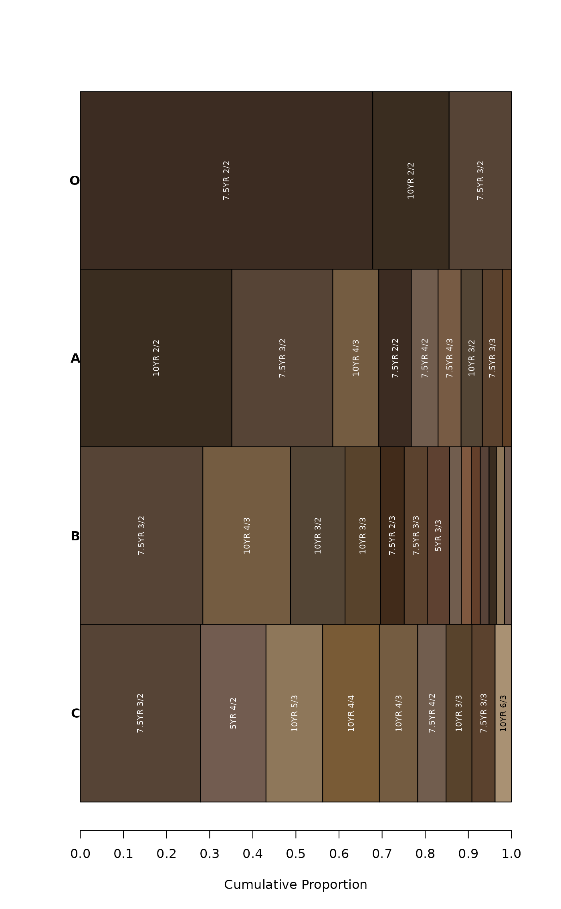

Generate a plot from summaries generated by aggregateColor().
Usage
aggregateColorPlot(
x,
print.label = TRUE,
label.font = 1,
label.cex = 0.65,
label.orientation = c("v", "h"),
buffer.pct = 0.02,
print.n.hz = FALSE,
rect.border = "black",
horizontal.borders = FALSE,
horizontal.border.lwd = 2,
x.axis = TRUE,
y.axis = TRUE,
...
)Arguments
- x
a
list, results fromaggregateColor()- print.label
logical, print Munsell color labels inside of rectangles, only if they fit
- label.font
font specification for color labels
- label.cex
font size for color labels
- label.orientation
label orientation,
vfor vertical orhfor horizontal- buffer.pct
extra space between labels and color rectangles
- print.n.hz
optionally print the number of horizons below Munsell color labels
- rect.border
color for rectangle border
- horizontal.borders
optionally add horizontal borders between bands of color
- horizontal.border.lwd
line width for horizontal borders
- x.axis
logical, add a scale and label to x-axis?
- y.axis
logical, add group labels to y-axis?
- ...
additional arguments passed to
plot
Examples
# keep examples from using more than 2 cores
data.table::setDTthreads(Sys.getenv("OMP_THREAD_LIMIT", unset = 2))
# load some example data
data(sp1, package = 'aqp')
# upgrade to SoilProfileCollection and convert Munsell colors
sp1$soil_color <- with(sp1, munsell2rgb(hue, value, chroma))
depths(sp1) <- id ~ top + bottom
site(sp1) <- ~ group
# generalize horizon names
n <- c('O', 'A', 'B', 'C')
p <- c('O', 'A', 'B', 'C')
sp1$genhz <- generalize.hz(sp1$name, n, p)
# aggregate colors over horizon-level attribute: 'genhz'
a <- aggregateColor(sp1, groups = 'genhz', col = 'soil_color')
# check results
str(a)
#> List of 2
#> $ scaled.data :List of 4
#> ..$ O:'data.frame': 3 obs. of 5 variables:
#> .. ..$ soil_color: chr [1:3] "#3C2C22FF" "#3A2D20FF" "#564436FF"
#> .. ..$ weight : num [1:3] 0.678 0.177 0.145
#> .. ..$ n.hz : int [1:3] 2 1 1
#> .. ..$ munsell : chr [1:3] "7.5YR 2/2" "10YR 2/2" "7.5YR 3/2"
#> .. ..$ .id : Factor w/ 4 levels "O","A","B","C": 1 1 1
#> ..$ A:'data.frame': 9 obs. of 5 variables:
#> .. ..$ soil_color: chr [1:9] "#3A2D20FF" "#564436FF" "#745C41FF" "#3C2C22FF" ...
#> .. ..$ weight : num [1:9] 0.3515 0.2342 0.1067 0.0754 0.0621 ...
#> .. ..$ n.hz : int [1:9] 4 3 1 2 1 1 1 1 1
#> .. ..$ munsell : chr [1:9] "10YR 2/2" "7.5YR 3/2" "10YR 4/3" "7.5YR 2/2" ...
#> .. ..$ .id : Factor w/ 4 levels "O","A","B","C": 2 2 2 2 2 2 2 2 2
#> ..$ B:'data.frame': 14 obs. of 5 variables:
#> .. ..$ soil_color: chr [1:14] "#564436FF" "#745C41FF" "#544535FF" "#58432CFF" ...
#> .. ..$ weight : num [1:14] 0.2842 0.2033 0.1265 0.0821 0.0552 ...
#> .. ..$ n.hz : int [1:14] 5 3 3 2 2 2 2 1 1 1 ...
#> .. ..$ munsell : chr [1:14] "7.5YR 3/2" "10YR 4/3" "10YR 3/2" "10YR 3/3" ...
#> .. ..$ .id : Factor w/ 4 levels "O","A","B","C": 3 3 3 3 3 3 3 3 3 3 ...
#> ..$ C:'data.frame': 9 obs. of 5 variables:
#> .. ..$ soil_color: chr [1:9] "#564436FF" "#725C50FF" "#8E775AFF" "#795B36FF" ...
#> .. ..$ weight : num [1:9] 0.279 0.152 0.131 0.131 0.089 ...
#> .. ..$ n.hz : int [1:9] 3 2 2 2 1 1 1 1 1
#> .. ..$ munsell : chr [1:9] "7.5YR 3/2" "5YR 4/2" "10YR 5/3" "10YR 4/4" ...
#> .. ..$ .id : Factor w/ 4 levels "O","A","B","C": 4 4 4 4 4 4 4 4 4
#> $ aggregate.data:'data.frame': 4 obs. of 9 variables:
#> ..$ genhz : Factor w/ 4 levels "O","A","B","C": 1 2 3 4
#> ..$ hue : chr [1:4] "7.5YR" "7.5YR" "7.5YR" "7.5YR"
#> ..$ value : num [1:4] 2 3 3 4
#> ..$ chroma : num [1:4] 2 2 3 3
#> ..$ munsell : chr [1:4] "7.5YR 2/2" "7.5YR 3/2" "7.5YR 3/3" "7.5YR 4/3"
#> ..$ distance: num [1:4] 1.16 2.19 2.75 2.85
#> ..$ col : chr [1:4] "#3C2C22FF" "#564436FF" "#5B422EFF" "#775B44FF"
#> ..$ n : int [1:4] 3 9 14 9
#> ..$ H : num [1:4] 1.23 2.66 3.14 2.91
# simple visualization
aggregateColorPlot(a)
